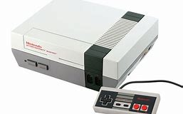
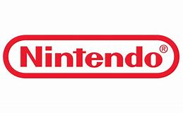
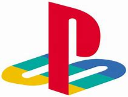
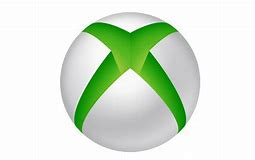

Un videojuego es una aplicación interactiva orientada al entretenimiento que, a través de ciertos mandos o controles, permite simular experiencias en la pantalla de un televisor, una computadora u otro dispositivo electrónico.
Los videojuegos se diferencian de otras formas de entretenimiento, como son las películas, en que deben ser interactivos, los usuarios deben involucrarse activamente con el contenido. Para ello, es necesario utilizar un mando (también conocido como gamepad o joystick), mediante el cual se envían órdenes al dispositivo principal (un ordenador o una consola especializada) y estas se ven reflejadas en una pantalla con el movimiento y las acciones de los personajes.
En los videojuegos, hay distintos tipos de ellos, como por ejemplo:
Acción: Esta categoría se basa principalmente en probar los reflejos del jugador, en este tipo de videojuegos, es común manejar a un personaje, el cual tiene que enfrentarse a distintos tipos de enemigos, pero no siempre tiene que ser así.
Aventura: En este tipo de juegos lo importante es la historia que desarrollas a lo largo del juego, la idea es ir pasando por distintos obstáculos, que generalmente son como versiones en miniatura de otros juegos, a lo largo del desarrollo del mismo. Un elemento importante en este tipo de juegos es interactuar con personajes dentro del mismo.
Carreras: En estos videojuegos lo más importante es llegar primero a la meta, ya sea compitiendo con otros jugadores o a contrarreloj. En la mayoría de los casos se conduce un vehículo, pero también puede tratarse de carreras estilo maratón, por ejemplo.
Cartas: Cuando se habla de cartas, suelen venir a la mente los típicos naipes de toda la vida, pero en realidad, se trata de todo un genero que suele mezclar estrategia con un poco de azar. Últimamente se están haciendo famosos los juegos móviles de esta temática, en los que se invoca a ciertos personajes luego de seleccionar una carta.
Casino: En estos juegos, el azar cobra protagonismo, ya no se trata simplemente de ciertos factores en los que puede influir la suerte, sino que se trata de la atracción principal. Los dos ejemplos mas famosos de este género son las traga monedas y las ruletas.
Educativos: Tal como lo indica el título, en este apartado, lo importante es la educación, y el entretenimiento se vuelve un anzuelo para cumplir con el fin. Los típicos ejemplos de estos juegos pueden ser: los juegos de matemática, de colorear, de formar palabras o frases, de preguntas y respuestas, etc.
Estrategia: En estos juegos lo importante es el planeamiento, la idea es que pienses lo que harás antes de realizarlo, bien sea al mando de un ejército, bien moviendo fichas en un tablero, o bien administrando tu base para que sea la más poderosa, entre otras infinitas posibilidades. Dentro de esta categoría podemos encontrar juegos como los RPG por turnos, los “tower defense”, entre otros. Estos juegos suelen combinarse con la recolección, la administración, la producción, en algunos casos también la acción (siempre que este no sea el elemento principal del mismo, ya que en ese caso sería considerado un juego de acción propiamente dicho).
Deportes: Son videojuegos que simulan deportes tradicionales, como puede ser el fútbol, básquet, bowling, golf, etc. Generalmente, la idea es que te sientas como un profesional en el deporte que estés simulando, aunque también el juego puede tratar de una parte mas estratégica, como por ejemplo ser el director técnico de un equipo de fútbol. La idea es simular el juego de la vida real, puede tratarse de ajedrez, damas, monopolio, sudoku, batalla naval, entre otros. Aunque también se puede tratar de juegos ideados especialmente para un dispositivo virtual, en este caso ya no se trataría de una simulación de un juego en la realidad.
Juegos de Palabras: Ya se descubriendo una palabra a partir de una serie de imágenes, o bien completar la palabra, ordenarla, cruzarlas, o bien de un crucigrama, se trata de juegos pensados con el fin de hacerte pensar en distintas formas de acomodar los símbolos que usamos en nuestra comunicación.
Juegos de rol: También conocidos como RPG (Role Playing Game) son videojuegos en los que tienes que interpretar el papel de un personaje ya sea determinado o creando el propio. Son muy populares en este genero los mundos mágicos con tinte medieval (castillos, caballos, peleas cuerpo a cuerpo, etc.). Pero este género no se limita a ello, sino que se trata de algo mucho mas amplio, que puede tocar mundos “sci-fi” (Science Fiction, o ciencia ficción), en los que tienes que, por ejemplo, ser el comandante de una nave, o realizar batallas espaciales. Y así existe una infinidad de posibilidades y subgéneros que se desprenden ser el mismo, como pueden ser los: MMORPG, JRPG, CRPG, etc.
Juegos de Música: Estos generalmente tienen que ver más con el ritmo que con la música, por ejemplo como esos en los que tienes que oprimir botones en orden y tiempos exactos para que la música siga, caso contrario la misma se detiene. algunos de estos juegos son mezclas con otros géneros como en el caso de los plataformeros en los que avanzas en una dirección y la música, junto con el escenario te guían para que oprimas el botón en el momento correcto, y el personaje salte. o también puede ser que controles un vehículo y tengas que recolectar “puntos” que están alineados con la melodía.
Juegos de preguntas y respuestas: Existen muchos formatos para este tipo de juegos, pero todos tienen que ver con la misma temática: el juego te realiza preguntas, y si tu las respondes correctamente ganas, caso contrario pierdes.
Rompecabezas: También conocidos por su nombre en inglés, como juegos de “puzzle”, las dos grandes ramas de este tipo de juegos serían la de resolver acertijos, u ordenar una serie de piezas en un cierto orden o patrón, para resolver el nivel. Algunos de estos juegos se suelen confundir con los ocasionales, ya que suelen ser muy utilizados para pasar el tiempo.
Simulación: Esta categoría es específica de todos aquellos juegos que intentan ser lo más parecidos posibles a la realidad, como por ejemplo los juegos de simulación de conducción, de la vida real, de realizar un trabajo, de ser un empresario, y toda otra cosa que se pueda imitar.
|
|

|

|

|

|
|